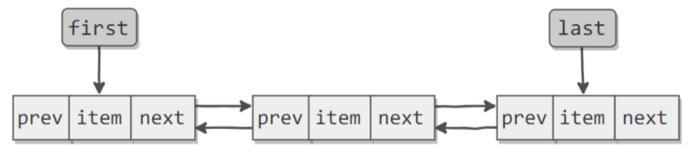

Java LinkedList

源码
public class LinkedList<E>
extends AbstractSequentialList<E>
implements List<E>, Deque<E>, Cloneable, java.io.Serializable
{
transient int size = 0;
transient Node<E> first;
transient Node<E> last;
private static class Node<E> {
E item;
Node<E> next;
Node<E> prev;
Node(Node<E> prev, E element, Node<E> next) {
this.item = element;
this.next = next;
this.prev = prev;
}
}
public boolean add(E e) {
linkLast(e);
return true;
}
void linkLast(E e) {
final Node<E> l = last;
final Node<E> newNode = new Node<>(l, e, null);
last = newNode;
if (l == null)
first = newNode;
else
l.next = newNode;
size++;
modCount++;
}
}
基于双向链表实现，使用Node存储链表节点信息。
为什么采用双线链表
加入采用单向链表，那么我要查找第k个元素，怎么查呢？只能从first节点往后遍历查找。而有了双线链表，可以判断k是大于size>>1=size/2，如果大于就从last节点往前遍历，如果小于就从first节点往后比遍历，时间复杂度要小。
public E get(int index) {
checkElementIndex(index);
return node(index).item;
}
Node<E> node(int index) {
// assert isElementIndex(index);
if (index < (size >> 1)) {
Node<E> x = first;
for (int i = 0; i < index; i++)
x = x.next;
return x;
} else {
Node<E> x = last;
for (int i = size - 1; i > index; i--)
x = x.prev;
return x;
}
}
与ArrayList对比
1、ArrayList基于动态数组实现的，LinkedList基于双线链表实现
2、ArrayList支持随机访问，LinkedList不支持
3、LinkedList在任意位置添加元素更快，ArrayList插入元素涉及后面元素的拷贝